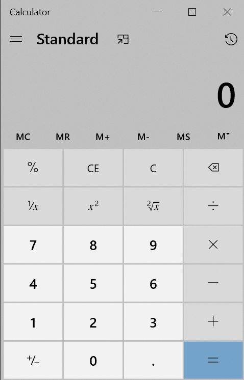

How to add to or subtract from a previously saved number?
To add to or subtract a number (on the display or a result from your previous calculation list) from the previously stored number:
Click the M+ button to add the new number to the stored number; to
subtract the new number from the stored number, click the M- button.
